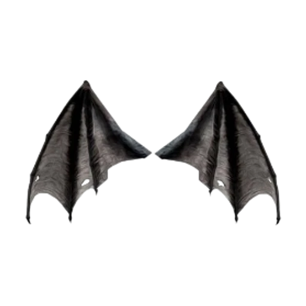

✦𓂃 ꒰ა Species ໒꒱ 𓂃✦
✦𓂃 ꒰ა Species ໒꒱ 𓂃✦

✦𓂃 ꒰ა Species ໒꒱ 𓂃✦
Name : Human, Uranth (Uran, meaning 'weak' or 'hopeless').
Origins : Karenth (Karen, meaning 'first') continent, thousands of years of evolutions.
Physical Appearance : Varies from slender, muscular, athletic or plump. Average height is about 1,5 m (5'3 ft) up to 1,8 m (6 ft). Humans don't posses any unnatural, animalistic traits, such as horns, wings, etc.
Abilities : Is able to keep their guard up for longer time due to being in higher danger for years.
Behaviour : Depends on genetics and environment, nowadays humans became less violent after new .
Environment : Meadows, lakes, rivers, forests.
Population : From 3% up to 6% of the global population.
Lifespan : Around 80-100 years.
Name : Vampire, Vylixan (Vylixan, meaning 'darkness' or 'from the dark').
Origins : After explosion, they were one of the first people ever to leave the safe grounds, but not reaching as far as fairies. Ancestors wandered over to valleys, caves and mountains, then decided to stay there for a while, although their stay was longer then expected and so they stayed there for ages.
Physical Appearance : Pale skin, unnatural eye colours, commonly skinny or athletic, with average height reaching 1,9 m (6'3 ft). Slightly pointy or down-turned ears, claws instead of nails. They can posses traits like small wings, tail, or small horns. Out of every specie, their blood can have different colour range, going from red, through purple and blue.
Abilities : Night vision, faster movement, better at timing.
Behaviour : Most of the time calm and not emotionally-driven; caring about their productivity, punctual and spending their time in best of ways.
Environment : Dark places; hills, caves, valleys, recently more reside near other species in normal houses.
Population : From 5% up to 15% of global population.
Lifespan : Around 100-300 years.
Name : Fairy, Kelnore (Kelnore, meaning 'feral' or 'agression').
Origins : One of the first people to travel after the explosion, getting affected by it the most. They posses more magic than others, commonly taught spells by parents.
Physical Appearance : Similar to humans, but slightly shorter; their average height reaching around 1,5 m (4'9 ft). They posses unnatural traits, such as patterns on bodies, but also pointy ears, antennas and bug-like wings.
Abilities : Better at magic control and tactical thinking.
Behaviour : Agressive from nature due to DE, often doing calming rituals. Controlling and quick to action.
Environment : Meadows, hills, rivers and forests.
Population : From 20% up to 30% of global population.
Lifespan : Around 100-300 years.
Name : Elf, Kyllia (Kyllia, meaning 'good sight' or 'better look').
Origins : One of the last people to leave the safe grounds, following a similar path to fairies; they didn't get affected as much due to DE not being as high as it was before, but still present enough for them to change.
Physical Appearance : Highly similar to humans, most of the changes can be seen on their face; narrow eyesand long pointy ears. Commonly more muscles with various patterns on body.
Abilities : Better sight and faster reaction, better hearing.
Behaviour : Calm and friendly, usually not showing that there's anything special about them until they have to.
Environment : Meadows, hills, rivers and lakes.
Population : From 15% up to 20% of global population.
Lifespan : Around 80-150 years.

Name : Wereanimal, Mazvix (Mazvix, meaning 'animal source').
Origins : Wereanimals are one of the first evolutions encountered; they come from most of the planet, often seen at places which work with animals, like farms. At first they were seen as a punishment or a curse, only getting accepted when most of the people slowly turned into them, with no way to hide who they are.
Physical Appearance : Wereanimals are everybody who have an animal-side, which has a huge range of many different animals. They can posses different animal traits, such as claws, big ears, wool, fur, tails, horns and much more.
Abilities : Nothing specific, every ability is based on the animal-side, which can include nght vision, better sight, faster reactions, better hearing, being stronger, etc.
Behaviour : Depends on a person's animal-side mostly, some can be very quiet, tactical, then others can be more 'feral'; quick to act, agressive, and so on.
Environment : Most of the places, mostly farms and fields, or forests, meadows and hills.
Population : From 30% up to 50% of global population.
Lifespan : Around 60-170 years.
Name : Avian, Orinaris (Orinaris, meaning 'sky' or 'heaven').
Origins : After the explosion they followed Tieflings' paths, but instead not going above the cloud levels. After some time Wereanimals joined them in their travel, living together and turning away from Tieflings.
Physical Appearance : Their bodies vary by their bird-side, at first being categorised as Wereanimals, but getting their own category after significant changes in them; they posses feather features, that being wings and tails, which number can go up to even 6. Some have narrow eyes, flatter ears or even bird-like feet or legs.
Abilities : Flying, better sight and some can posses night vision.
Behaviour : Most are calm, not seeking any dangerous situations, preferring to stay in their comfortable places.
Environment : Flying islands, mountains, forests, hills and meadows.
Population : From 15% up to 25% of global population.
Lifespan : Around 60-150 years.
Name : Tiefling, Zarinith (Zarini, meaning 'strong').
Origins : Ancestors of now known as Tieflings preferred to go their independent way, seeking thrill and fun in their life, which was seen as a nonsense by others. They found their place on high mountains and vulcanos, watching the ground below them.
Physical Appearance : Most are tall and muscular, at average height of 2 m (6'5 ft). They have most of the human features, but due to living on rocky terrain their skin grew tougher, almost scale-like. Tieflings also posses dragon traits, such as claws, big horns and wings, which they use for defense; it's rare for them to be able to fly.
Abilities : Stronger than others, better defense.
Behaviour : Mainly extroverted, obsessed over their looks and reputation, often seeking chaos instead of peace.
Environment : Rocky and unsteady terrain; high mountains, vulcanos, hills.
Population : From 15% up to 30% of global population.
Lifespan : Around 70-200 years.
Name : Sea Creature, Quirnil (Quirnil, meaning 'from water').
Origins : After the explosion, ancestors of now called Sea Creatures took on a different path than most of the people, usually travelling by the sea as the quickest way. They spent their time and lived off of what waters gave them.
Physical Appearance : Apparance changes based on environment and a person's sea-side; the bigger it is, more non-human features appear. Most common appearance features fish-like tail or webbing between fingers, sharper teeth or inner eyelids; in other cases a person can fully develop water-animal part.
Abilities : Great swimming, good sight in water, being able to breath under water or hold breath for a long time.
Behaviour : Usually beauty-centered, concentrating on the looks of everything around them, even people.
Environment : Every type of sea and ocean, sometimes big lakes; rivers are commonly used as passages between regions.
Population : From 20% up to 40% of global population.
Lifespan : Around 70-200 years.